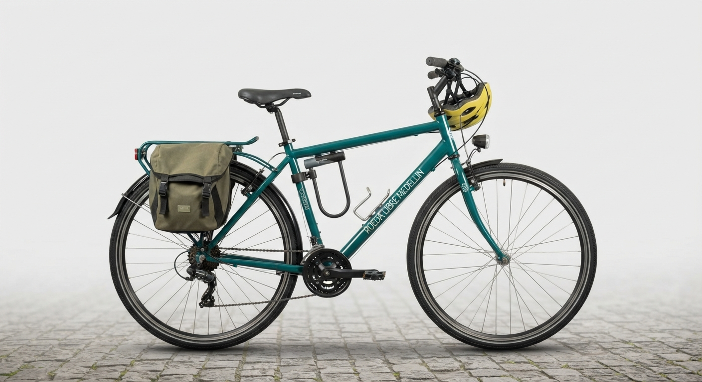
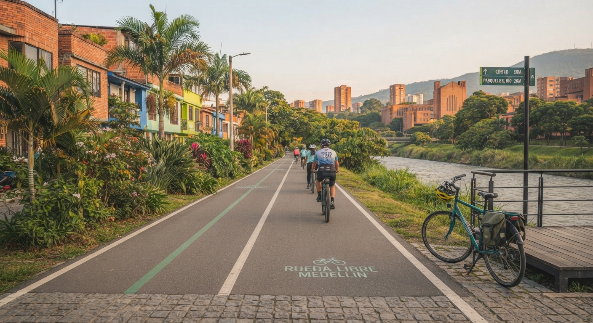

Alquiler de bicicletas
Disfruta de la libertad de rodar a tu propio ritmo por las ciclorrutas de Medellín. Cada alquiler incluye casco y candado de alta seguridad para que te muevas con total tranquilidad.

¡Te damos la bienvenida a Rueda Libre! Explora la ciudad sobre dos ruedas de forma segura y sostenible. Si deseas ubicarnos, ve a la sección Encuéntranos o realiza una Reservar ahora.

Somos un emprendimiento de Medellín enfocado en la movilidad sostenible y el turismo urbano activo. Queremos que cada rodada sea una experiencia inolvidable y conectada con la cultura local.
Disfruta de la libertad de rodar a tu propio ritmo por las ciclorrutas de Medellín. Cada alquiler incluye casco y candado de alta seguridad para que te muevas con total tranquilidad.

Únete a nuestras experiencias grupales guiadas por expertos a través de los sitios más emblemáticos y murales urbanos de la ciudad.

Sigue estos sencillos pasos para comenzar tu aventura:
¿Tienes dudas o quieres visitarnos?